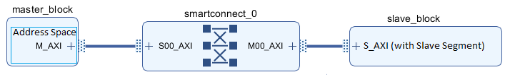
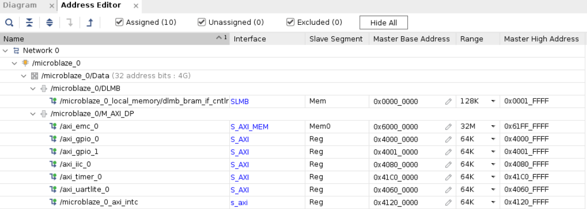
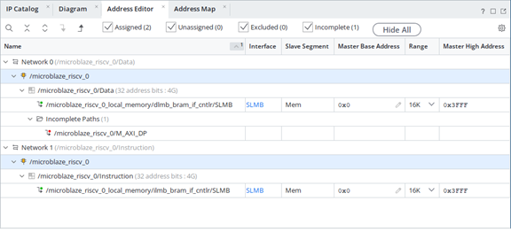

주소
CPU가 어느 Memory 또는 Peripheral을 선택할지 결정한다.
Basys3 SoC + NPU · SoC 04
MicroBlaze V가 주소를 이용해 BRAM의 특정 위치를 선택하고 데이터를 읽고 쓰는 과정을 직접 확인한다. Vivado Address Editor의 Base Address와 Range를 연결해 이해하고, 같은 주소 접근 방식이 이후 AXI Peripheral Register에 어떻게 확장되는지 정리한다.
CPU가 어느 Memory 또는 Peripheral을 선택할지 결정한다.
선택한 주소에 실제 값을 Write하고 다시 Read한다.
BRAM 주소 접근을 AXI Peripheral Register 접근으로 연결한다.
CPU가 BRAM, UART, GPIO, Timer 같은 여러 자원 중 하나를 선택하려면 각 자원에 서로 다른 주소 범위를 부여해야 한다.
시스템의 Memory와 Peripheral을 주소별로 배치한 표가 Memory Map이다.
32비트 MicroBlaze V의 기본적인 32비트 주소 공간은 0x00000000 ~ 0xFFFFFFFF, 즉 4 GB이다.
이 실습은 32비트 Machine mode와 MMU 비활성 구성을 사용한다. 주소 변환 없이 연결된 메모리와 주변장치에 접근하며, 32비트 주소 범위는 4 GiB이다.
| 대상 | CPU가 보는 것 | 동작 |
|---|---|---|
| BRAM | Memory Address | Load / Store |
| GPIO Register | Peripheral Address | Load / Store |
| UART Register | Peripheral Address | Load / Store |
| Timer Register | Peripheral Address | Load / Store |
| 용어 | 의미 |
|---|---|
| Address Space | Master가 생성할 수 있는 전체 주소 공간 |
| Slave Segment | Memory 또는 Peripheral이 제공하는 주소 가능한 영역 |
| Address Path | Master Interface에서 Slave Interface까지의 주소 전달 경로 |
| Master Segment | Master Address Space 안에 Slave Segment를 Base/Range로 배치한 결과 |


그림의 주소값은 AMD 매뉴얼 예제이며 현재 SoC 04 프로젝트의 실제 주소값이 아니다.
실제 프로젝트에서는 Vivado Address Editor와 Vitis Linker Script의 주소를 기준으로 확인한다.
| 항목 | 의미 |
|---|---|
| Base Address | 해당 영역의 첫 주소 |
| Range | 해당 영역의 주소 크기 |
| High Address | Base + Range - 1 |
ELF의 .text, .data, .bss, Stack, Heap이 모두 Local BRAM에 배치될 수 있으므로 임의의 BRAM 절대주소를 테스트용으로 바로 사용하면 프로그램 영역과 충돌할 수 있다.
따라서 Linker가 배치한 bram_word[] 배열의 실제 주소를 Debugger에서 확인한다.
다음 코드는 SoC 04의 주소 확인을 위해 작성한 교육용 예제이다.
#include <stdint.h>
#include <stddef.h>
/*
* SoC 04 교육용 Memory Map / BRAM 주소 확인 코드
* 특정 BRAM 절대주소를 임의로 고정하지 않는다.
*/
volatile uint32_t bram_word[4] = {0, 0, 0, 0};
volatile uintptr_t addr_0 = 0;
volatile uintptr_t addr_1 = 0;
volatile uintptr_t addr_2 = 0;
volatile uintptr_t addr_3 = 0;
volatile uint32_t read_0 = 0;
volatile uint32_t read_1 = 0;
volatile uint32_t read_2 = 0;
volatile uint32_t read_3 = 0;
volatile uint32_t stage = 0;
int main(void)
{
addr_0 = (uintptr_t)&bram_word[0];
addr_1 = (uintptr_t)&bram_word[1];
addr_2 = (uintptr_t)&bram_word[2];
addr_3 = (uintptr_t)&bram_word[3];
stage = 1;
bram_word[0] = 0x11111111U;
bram_word[1] = 0x22222222U;
bram_word[2] = 0x33333333U;
bram_word[3] = 0x44444444U;
stage = 2;
read_0 = bram_word[0];
read_1 = bram_word[1];
read_2 = bram_word[2];
read_3 = bram_word[3];
stage = 3;
bram_word[1] = 0xA5A5A5A5U;
stage = 4;
read_1 = bram_word[1];
stage = 5;
while (1) {
}
return 0;
}
uintptr_t는 Pointer 주소값을 정수형으로 담기 위한 형식이다. 실제 BRAM 주소는 Build 후 Linker가 결정한다.| 단계 | 동작 | 확인값 |
|---|---|---|
| 1 | 실제 주소 저장 | addr_0 ~ addr_3 |
| 2 | 4개 위치에 Write | 11111111, 22222222, 33333333, 44444444 |
| 3 | 같은 주소에서 Read | read_0 ~ read_3 |
| 4 | bram_word[1] Re-Write | 0xA5A5A5A5 |
| 5 | 같은 주소 Re-Read | read_1 = 0xA5A5A5A5 |
Watch 창에 addr_0 ~ addr_3, bram_word[0] ~ [3], read_0 ~ read_3, stage를 등록한다.
| 구분 | 예 | 의미 |
|---|---|---|
| Address | addr_1 | 어느 위치를 선택할지 결정 |
| Data | 0xA5A5A5A5 | 선택된 위치에 저장되는 값 |
AMD UG1629에 따르면 MicroBlaze V의 Data Peripheral Interface는 AXI4-Lite를 기본으로 사용해 Peripheral에 단일 Read/Write 접근을 수행할 수 있다.

Block Design 상단의 Address Editor를 연다.
microblaze_riscv_0의 Instruction/Data Address Space를 확인한다.
주소가 없는 Slave Segment가 있는지 확인한다.
자동 배치 후 Base Address와 Range를 확인하거나 직접 조정한다.
각 Address Range가 서로 겹치지 않는지 확인한다.
| 문제 | 결과 |
|---|---|
| Address Range 중복 | Slave 선택 충돌 또는 Address Assignment 오류 |
| Range 부족 | 전체 Register 영역 접근 불가 |
| 잘못된 Alignment | Vivado 주소 배치 오류 또는 불필요한 복잡성 |
| Hardware 주소와 Software Macro 불일치 | CPU가 잘못된 Hardware에 접근 |
volatile uint32_t *reg =
(volatile uint32_t *)PERIPHERAL_ADDRESS;
*reg = write_data; // Write
read_data = *reg; // Readvolatile은 Hardware 주소 접근을 Compiler가 임의로 제거하거나 일반 Register 값으로만 대체하지 않도록 하는 데 중요하다.
PERIPHERAL_ADDRESS는 실제 Address Editor와 Hardware Header에서 확인한 주소를 사용한다. SoC 04에서는 존재하지 않는 Peripheral 주소를 임의로 실행하지 않는다.| 증상 | 원인 후보 | 확인 위치 |
|---|---|---|
| 주소가 예상과 다름 | Linker 배치 결과 차이 | addr_0 ~ addr_3, Linker Map |
| Read 값이 Write 값과 다름 | 실행 순서 또는 Breakpoint 위치 | stage |
| Memory Overflow | Program/Data가 Local BRAM보다 큼 | Linker Map |
| Address Editor에 Peripheral이 없음 | 아직 AXI Slave를 추가하지 않음 | SoC 04에서는 정상 |
| 임의 주소 접근 후 오류 | 해당 주소에 실제 Slave가 없음 | Assigned Segment 확인 |
0x00000000 ~ 0xFFFFFFFF을 이해한다.0x00000000 ~ 0x00003FFF임을 이해한다.bram_word[0] ~ [3]의 실제 주소를 Debugger에서 확인했다.bram_word[1]의 최종값이 0xA5A5A5A5임을 확인했다.| 문서 | 확인 항목 |
|---|---|
| AMD UG994 · Addressing Structure · 2026.1 | Address Space, Segment, Path 구조 |
| AMD UG994 · Using the Address Editor · 2026.1 | Address Editor 구조 |
| AMD UG994 · Editing Addresses · 2026.1 | Assign All, Base/Range 편집 |
| AMD UG1711 · Memory-Mapping in the Address Editor · 2026.1 | MicroBlaze V Peripheral Memory Mapping 절차 |
| AMD UG1629 · Memory Architecture · 2026.1 | 32비트 Effective/Physical Address 관계 |
| AMD UG1629 · Memory-Mapped Interfaces · 2026.1 | AXI Peripheral Interface Read/Write |